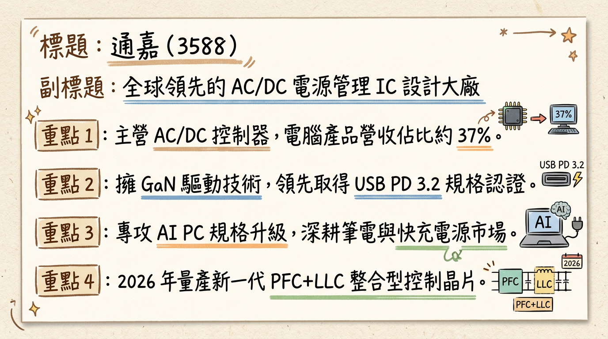

3588 通嘉 深度研究報告
一句話摘要
通嘉（3588）正處於由消費性電子轉型至 AI PC 與高功率 PD 3.2 的陣痛期，2025 年獲利受毛利重挫觸底，但 2026 年 1 月營收創 16 個月新高，營運出現谷底回升訊號。
公司概覽
通嘉（Leadtrend）為台灣 AC/DC 電源管理 IC 設計領先廠商，專注於電源轉換與控制解決方案，產品廣泛應用於筆電、手機快充及消費性電子。
業務與產品線結構
| 業務類別 | 營收佔比 (2025Q1) | 核心產品 / 應用 | 發展重點 |
|---|---|---|---|
| 電腦類 (Computer) | 37% | PWM IC、同步整流 IC、USB-PD | 受惠 AI PC 規格升級，佔比持續提升 |
| 消費性電子 | 35% - 36% | 適配器、充電器控制 IC | 需求穩定，但受價格戰競爭壓力大 |
| 通訊類 | 25% | 網通設備電源管理 | 受中國本土化政策影響，佔比略降 |
| 其他 | 2% - 3% | 工業、其他電源應用 | 布局中大功率市場 |
核心競爭優勢
財務分析
近期月營收趨勢表
| 月份 | 營收 (億元) | 月增率 (MoM) | 年增率 (YoY) | 備註 |
|---|---|---|---|---|
| 2026/01 | 1.35 | +12.52% | +13.52% | 創 16 個月新高 |
| 2025/12 | 1.20 | -1.60% | +13.63% | 回溫趨勢確立 |
| 2025/11 | 1.22 | - | - | 表現持平 |
| 2025/10 | 1.15 | - | - | 庫存去化中 |
| 2025/09 | 1.08 | - | - | 營運低谷 |
| 2025/08 | 1.05 | - | - | 營運低谷 |
年度 EPS 與趨勢
- 2024 全年（實際）： 1.89 元
- 2025 全年（預估）： 0.45 - 0.50 元（受毛利下滑影響大幅衰退）
- 2026 全年（預估）： 1.35 元（受惠 AI PC 換機潮與產品組合優化）
法說會重點（2025/12/11）
券商觀點
| 券商名稱 | 報告日期 | 目標價 (TWD) | 評等 | 備註 |
|---|---|---|---|---|
| 國泰證券 | 2026/02/10 | 55.0 | 區間操作 | 看好 2026 營收重回成長 |
| 富邦證券 | 2025/12/12 | 52.0 | 維持中立 | 毛利下滑壓力仍存 |
| 中信投顧 | 2025/11/15 | 48.0 | ⚠️過時 / 持有 | 基於 2025Q3 財報不佳 |
| CMoney | 2025/08/17 | 86.0 | ⚠️顯著失效 | 當時對 AI 成長過度樂觀 |
財報深度分析
利潤率趨勢表格
| 期間 | 毛利率 (%) | 營業利益率 (%) | EPS (元) | 狀態說明 |
|---|---|---|---|---|
| 2025 Q3 | 30.3% | -2.8% | 0.08 | 毛利重挫，本業轉虧 |
| 2025 Q2 | 38.0% | 5.9% | 0.03 | 維持高毛利但稅後低 |
| 2025 Q1 | 36.1% | 3.5% | 0.27 | 表現相對穩健 |
| 2024 Q3 | 38.1% | 11.1% | 0.76 | 近兩年獲利高峰 |
營運指標分析
- 存貨分析： 2025 Q3 存貨周轉天數為 251.8 天，雖較 2023 年（>500 天）大幅改善，但仍遠高於產業健康水位。
- 資本支出： 2025Q3 單季僅 885.7 萬元，主要用於研發設備。
- 負債比率： 財務結構尚稱穩健，但現金流受獲利衰退影響趨於嚴謹。
股權異動
- 2025/11： 經理人余淑薇（6張）、周烱峰（18張）申報轉讓，性質為「限制型股票信託」。
- 2025/07： 配發 1.198 元現金股利及 0.2 元股票股利，展現穩定配息意願。
- 資本計畫： 目前查無可轉債 (CB) 或現金增資計畫，資本結構穩定。
產業分析
全球 PMIC 市場與競爭格局
| 廠商 | 市佔率 | 優勢與定位 |
|---|---|---|
| TI (德州儀器) | ~20% | 12 吋廠產能優勢，價格戰主要發動者 |
| MPS | - | 高階工業與車用 PMIC 領導者 |
| 通嘉 (3588) | 微小 | 高性價比、USB PD 3.2 先行者 |
| 茂達 (6138) | - | AI PC 主要受惠者，營收規模較大 |
產業趨勢
- 8 吋代工漲價： 2026 年預計 8 吋晶圓利用率回升至 85%-90%，代工費可能調漲 5%-20%，對通嘉毛利形成考驗。
- AI PC 換機潮： 帶動 PMIC 從 65W 向 100W-240W 升級，單機產值（Content Value）增加 30%-50%。
近期催化劑
- 利多事件：
2. 2026/03/05 董事會：關注 2025Q4 財報能否止損及 2026 股利政策。
3. 歐盟全面落實 USB-C 標準，帶動 Type-C 快充換機潮。
- 利空事件：
2. 毛利率 30.3% 為近期低點，回升速度若慢於預期將壓抑股價。
⭐ 成長動能時間軸
- 2025 Q4 (已發生)： 中大功率 LLC、HB PFC 新產品成功切入 AI 伺服器電源次側應用。
- 2026 Q1 (正在進行)： 1.35 億元營收月報公告，確認營運重回年成長軌道。
- 2026/03/05： 董事會審核 2025 財報，將是 2026 營運轉折的重要風向球。
- 2026 H1： 推廣 140W 及 240W PD 快充方案，主攻電競筆電與戶外儲能市場。
- 2026 全年： AI PC 市場規模化出貨，帶動通嘉 Computer 產品線佔比挑戰 40% 以上。
2026 展望
- 成長動能： AI PC 換機潮對高單價 PMIC 需求帶動，以及中大功率新產品貢獻。
- 風險： 晶圓代工成本上漲、新台幣強勢、消費性電子需求復甦緩慢。
投資結論
本報告由 AI 自動產生，資料來源為公開網路資訊，僅供參考，不構成投資建議。產生時間：2026-03-01 03:53
📊 資訊卡
